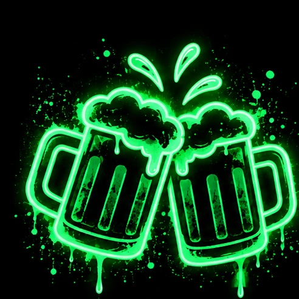

50 KARTEN AUSGEWÄHLT ✓
1 / 50

PARTY & HUMOR
TRINKEN STATT AUFGABE
Freiwillig · auch alkoholfrei möglich
📱 Bitte Handy ins Querformat drehen
EINSTELLUNGEN
Jede Aufgabe ist freiwillig und darf übersprungen werden. Keine Trinkpflicht.
NO SHAME! 🍻
Eigenständiges Partyspiel für 2–10 Erwachsene. V1.0 Beta 10 mit 500 Aufgaben-Einträgen (redaktionelle Rohfassung), sechs Kategorien und drei optionalen Trinkvarianten.
Spielinhalte sind freiwillig. Keine Aufgabe verlangt Körperkontakt ohne Zustimmung.